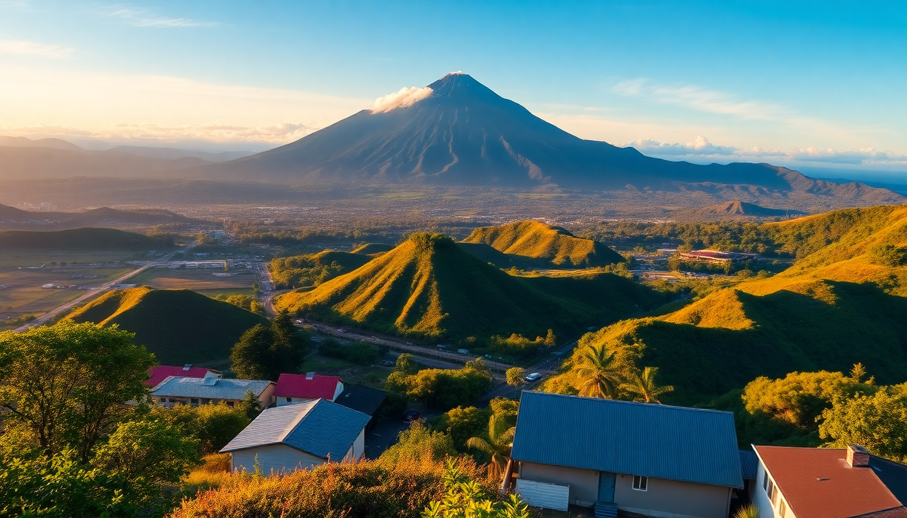

Best Time to Visit Arenal Volcano in Costa Rica

I showed up in La Fortuna during the green season in early November, expecting daily downpours. What I got was a mix of morning sun, afternoon showers that cleared by dinner, and trails that felt like I had them to myself. That trip taught me that the "best" time at Arenal Volcano depends entirely on what you want: dry hikes, cheap hotels, or empty hot springs. Here’s what I learned.
What is the weather like month by month at Arenal?
Arenal sits on the Caribbean slope, so it gets rain year-round—but the pattern is predictable. The dry season runs from December through April, with January and February being the driest months. I hiked the Arenal 1968 Trail in late January and didn’t feel a drop. The volcano was fully visible, and the lava fields baked under a cloudless sky. The trade-off? Crowds at Tabacón Hot Springs and higher room rates.
The green season (May to November) sees heavier rain, especially in September and October. But mornings are often clear. I did the Mistico Hanging Bridges at 7 a.m. in October and had the canopy walk to myself. Rain usually hits between 1 p.m. and 4 p.m., so plan your hikes early. November is a sweet spot: rain tapers off, prices drop, and the forest is lush.
- December–April: Dry, sunny, busy. Best for volcano views and hiking.
- May–August: Rainy mornings, afternoon storms. Lush green, fewer tourists.
- September–October: Wettest months. Some tours close. Lowest prices.
- November: Transition month. Good balance of weather and crowds.
When is the best time for hiking and outdoor activities?
For hiking, aim for the dry season—January through March. I attempted the Cerro Chato trail in August and turned back halfway because the mud turned the path into a slip-and-slide. The Arenal Volcano National Park trails are well-maintained, but after a heavy rain, the lava rock gets slick. In February, I walked the Las Coladas trail in dry boots and saw the 1992 lava flow clearly.
If you’re set on the La Fortuna Waterfall, go in the dry season. The water is lower but swimmable, and the 500-step staircase is less treacherous when dry. In the green season, the waterfall roars with volume, but the current can be dangerous. I saw a lifeguard pull a swimmer out in October.
- Best for hiking: January–March. Trails are dry, views are clear.
- Best for waterfalls: December–April. Safer swimming at La Fortuna Waterfall.
- Best for canopy tours: November–April. Less rain means more zip-line runs at Sky Adventures Arenal.
When should I visit to avoid crowds?
If you hate queuing for hot springs or jostling for a photo at the volcano viewpoint, skip the peak dry months. I visited in early December and found El Silencio Mirador almost empty—just me, the volcano, and a pair of toucans. February is the worst for crowds. I stood in line for 20 minutes at the entrance to Tabacón even with a reservation.
The shoulder months—late November and early May—are my go-to. In late November, the Arenal Observatory Lodge had vacancies at half the high-season rate. In early May, the rain hasn’t fully arrived, but the spring break crowd has left. September is the quietest month, but many smaller restaurants in La Fortuna close for a week or two.
- Busiest: January–March, especially February.
- Quietest: September–October (but wettest).
- Best compromise: Late November, early May.
What is the wildlife like in different seasons?
Wildlife at Arenal doesn’t follow a strict calendar, but the green season brings more activity. I saw howler monkeys and white-faced capuchins on the Arenal Hanging Bridges in July, and a guide told me the rain brings out amphibians. The Ecocentro Danaus reserve in La Fortuna was alive with red-eyed tree frogs and toucans during my August visit.
Dry season concentrates animals near water sources. In March, I watched a troop of coatis drink from a stream on the Península de Papagayo side of the park. Birders should aim for March–April, when migratory species pass through. The Arenal Reservoir is good for birdwatching year-round, but I saw more ospreys in December.
- Best for mammals: May–November (more active in rain).
- Best for birds: March–April (migration).
- Best for reptiles: Dry season (snakes and lizards bask in sun).
How does the rain affect hot springs and lodging?
Rain doesn’t ruin hot springs—it enhances them. I soaked at Baldi Hot Springs in a downpour, and the steam rising off the pools made it feel like a natural sauna. The real issue is access. Some hotels like The Springs Resort & Spa have paved paths that stay safe in rain, but budget spots like Los Lagos have trails that turn to mud.
Lodging prices mirror the weather. In January, the Arenal Kioro Suites cost me $280 a night. In October, the same room was $120. The Nayara Tented Camp is stunning but books out months in advance for dry season. I stayed at Hotel Lomas del Volcán in November and got a volcano-view room for $90—half the February rate.
- Dry season booking: Reserve 3–4 months ahead for places like Nayara.
- Green season deals: 30–50% off at Arenal Observatory Lodge.
- Rain-friendly properties: The Springs Resort (covered walkways), Baldi (heated pools under roof).
Is it worth visiting during the rainy season?
Yes, if you’re flexible. I spent a week in La Fortuna during October and only lost one full day to rain. The rest followed the same rhythm: clear skies until noon, a heavy shower at 2 p.m., then clearing by sunset. I did the Arenal Volcano Night Walk tour in the rain, and our guide spotted a fer-de-lance snake and two sleeping toucans that we’d have missed in dry weather.
The downsides are real: some tours cancel if lightning is near the volcano, and the La Fortuna Waterfall can be too dangerous for swimming. But the forest is at its greenest, and the Arenal River is perfect for white-water rafting (Class III–IV in the wet season). I booked a rafting trip with Wave Expeditions and had the river almost to myself.
FAQ
What is the absolute best month to visit Arenal Volcano? April. It’s the tail end of the dry season, so trails are still dry and the volcano is usually clear. Crowds thin out after Easter, and hotel rates drop. I went in mid-April and had clear views from the Arenal 1968 Trail with only a dozen other hikers.
Can I see the volcano every day in the dry season? No. Even in February, the peak of the dry season, the volcano’s summit is often shrouded in clouds by late morning. I saw the full cone on three out of seven days. Go early—sunrise is the best bet. The El Silencio Mirador is my favorite spot for dawn views.
Are the hot springs open during heavy rain? Yes, most are open. Tabacón and Baldi have covered areas and heated pools. The rain actually makes the experience more atmospheric—just bring a waterproof bag for your towel. I’ve soaked in a thunderstorm at Termales Los Laureles and it was memorable, not miserable.
Conclusion
- For clear volcano views and dry hiking: Visit January through March.
- For low prices and empty trails: Go in November or May.
- For wildlife and lush scenery: Plan around the green season (June–August).
- For hot springs in the rain: Any month works, but September–October offers the best deals.
- Avoid February if you dislike crowds—it’s the busiest month at Tabacón and the national park.